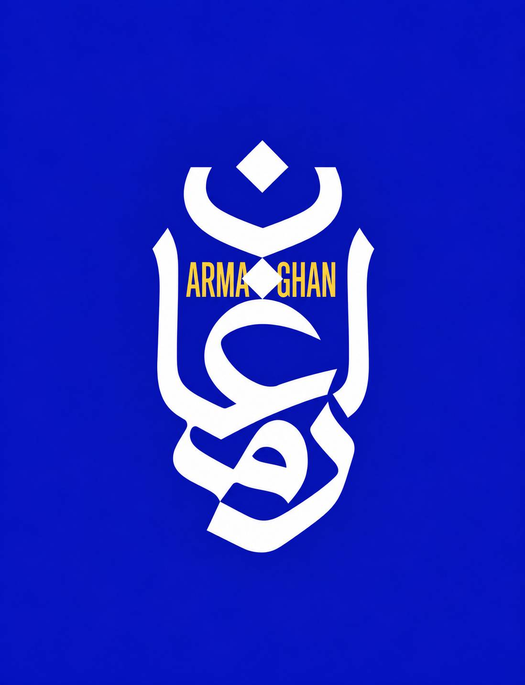

ARMAGHAN TRADING · UX/UI LAB
آزمایشهای تجربه کاربری
نسخههای آزمایشی کاتالوگ B2B ارمغان. جدیدترین تست همیشه بالاتر است.
TEST 18App Nav + Account Drawer
App-like Header · Dashboard Drawer
بازگشت ناوبری app-like و وسطچین در دسکتاپ، drawer موبایل/تبلت بدون تکرار ناوبری و با داشبورد حساب، انتخاب زبان دکمهای، تم روشن/تیره با تشخیص اولیه سیستم، حالت دوگانه اکشن کارت و Vazirmatn FD.
TEST 17Mobile Drawer + Modal Login
Cleaner Header · SVG Catalog
هدر موبایل ساده با همبرگر و drawer، منوی دسکتاپ وسطچین و لینکمحور، theme toggle تکآیکون، ورود centered lightbox با backdrop blur، واتساپ سفید بزرگتر و بازگشت رسانهها به SVG بدون عکس.
TEST 16Adaptive Desktop + Theme
Adaptive Commerce Workspace
موبایل و تبلت app-like حفظ شده؛ دسکتاپ با ناوبری بالایی، فیلتر ستونی و گرید عریض. تم system/light/dark، واتساپ سفید روی سبز، اکشنهای کارت نرمتر و نمایش رسانه استودیوییتر.
TEST 15تصویر + زبان
Digikala Gallery · Lightbox · Locale
دو تصویر واقعی نمونه برای هر محصول از دیجیکالا، اسلاید خودکار، PhotoSwipe تمامصفحه با زوم/پینچ/سوایپ، لوگوی رسمی واتساپ و تشخیص اولیه زبان با امکان انتخاب دستی.
TEST 14دسترسپذیری
Keyboard & Focus Accessibility
ادامه Test 13 با پرش مستقیم به محتوای اصلی، انتقال امن فوکوس پس از تغییر مسیر، focus-visible و احترام به reduced motion.
TEST 13رسانه هاستمحور
Host-Centric Media · Licensed Web Stock
Vue 3 محصولمحور با ۱۸ محصول نمونه، تصاویر آزادِ ذخیرهشده روی خود هاست، provenance و صفحه مجوزها، SQLite پربارتر و مسیرهای کامل سفارش/واتساپ.
TEST 12Vue 3 پایه محصول
Vue 3 Product Foundation
Vue 3 + TypeScript + Router + Pinia + Tailwind، خروج سراسری، ویزارد کامل، واتساپ، شِیمر و fallback.
TEST 11
Product Foundation · Tailwind
TEST 10
Adaptive Sheet Catalog
TEST 09
Inline Expand Catalog
TEST 08
Focused Modal Catalog
TEST 07
Classic Catalog
TEST 06
WhatsApp-first Quick Actions
TEST 05
Customer Profile Model
TEST 04
Services Hub
TEST 03
RFQ Cart
TEST 02
Product Card Bottom Sheet Focus
TEST 01
Unified Request Builder